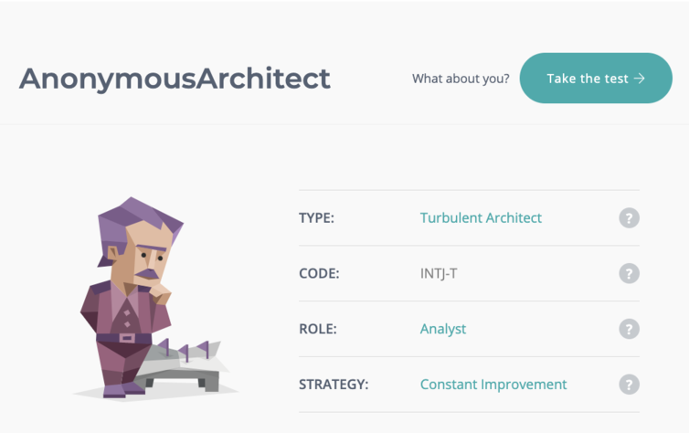
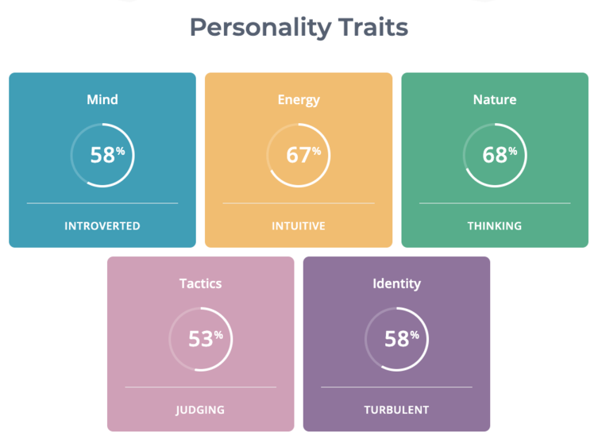
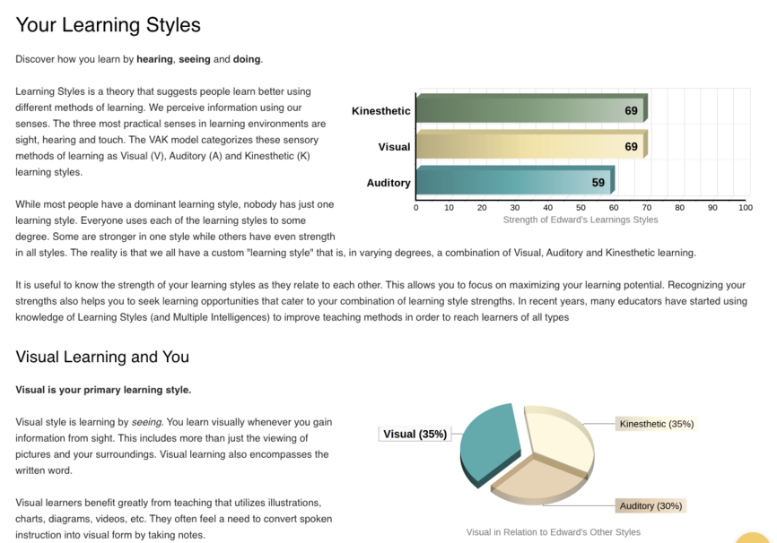
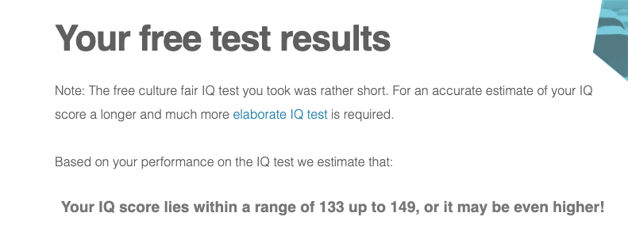

| | Edward Glush
IT Assignment |
Test Results
Myer-Briggs Personality Test


What do the results of the test mean to me?
It shows me that I have the ability to think and perhaps overthink. I am leaning towards introversion, but it seems I am close to middle ground there. I mostly judge/analyse and tend to expect individuals to see my point of view; sometimes this may be a downfall as I expect others to be on my path and my pace. It is difficult for me to emphasize, not necessarily because I don’t have an interest, but more particularly due to misunderstanding.
How do you think these results influence my behaviour in a team?
The results show me that working in a team is definitely possible, considering my introversion and extraversion seems to be middle ground. However, I do prefer to work separately when actually completing a task as I get distracted working with others. The separation of work within a team allows me to easily mould into a team environment for a group assignment for example. I like to coordinate efforts to achieve a mutual objective; in this case, reaching for a high mark!
How should you take this into account when forming a team?
I expect to be able to learn the plethora of skills associated with a professional wealth manager. Skills that can be used effectively and efficiently in my future line of work. Particularly, IT skills. I notice many job advertisements require proficiency in multiple IT languages, as well as general proficiency using Office. I have come to understand that IT is crucial in most work roles and environments in order to succeed. The future of the world lies with a major dependence of the internet and softwares. Companies must choose multiple softwares to aid their current work environments and ensure progress into the future. Paper work is simply inefficient when considering the big picture and slows down the pace of a work environment. IT has become pivotal to the success of most, if not all, companies. Thus, I expect to be able to have sufficient IT skills to progress into the futureThere isn’t too much to take into account. The group assignment is completed online with communication regarding parts of the assessment. I do enjoy helping others, so if parts of the assignment need help from my end, I am gladly able to.
Learning Style Test Results:

What do the results of the test mean to me?
Being a visual learner is correct. I do enjoy learning via methods of hearing, seeing and doing. Listening isn’t my strongest skill when it comes to learning. I do prefer to see examples being written out and performing the tasks on my own (whilst asking for help, of course).
How do you think these results influence my behaviour in a team?
Regarding a team, seeing the work handed in by a group is effective for me. I am able to see the completed work and assess where I am confused or perhaps where I would be able to help improve parts of the work.
How should you take this into account when forming a team?
When forming a team it isn’t so necessary to take into account being a visual learner. Observing the work complete by the rest of the team is a strength for me and therefore I do not see it hindering my ability to reside in a group.
IQ Test

What do the results of the test mean to me?
The IQ test is a basic and free test I found on the internet. To me, it is a general understanding of how my brain works and what type of tasks suit my strengths. I do notice that my pattern recognition and logical reasoning is far greater than my creativity and comprehension for example.
How do you think these results influence my behaviour in a team?
I believe these results have no effect on my behaviour in a team. I am able to complete many tasks, but there are many areas where I have weaknesses. The IQ test is a great way of understanding logic and reasoning, but it does not reflect my emotional intelligence. Perhaps, this is a flaw and may affect my behaviour in a team, but in the past, I have had no issue cooperating in a team.
How should you take this into account when forming a team?
When forming a team, I do not believe this has any effect, as an IQ level really does not hinder the formation of a team from my end.
|
|